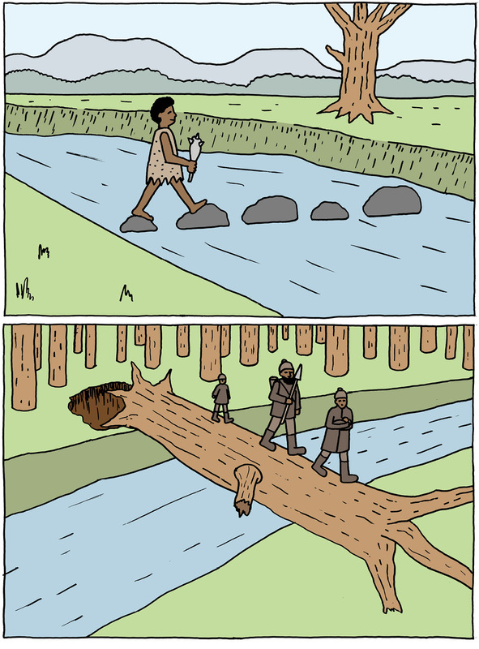
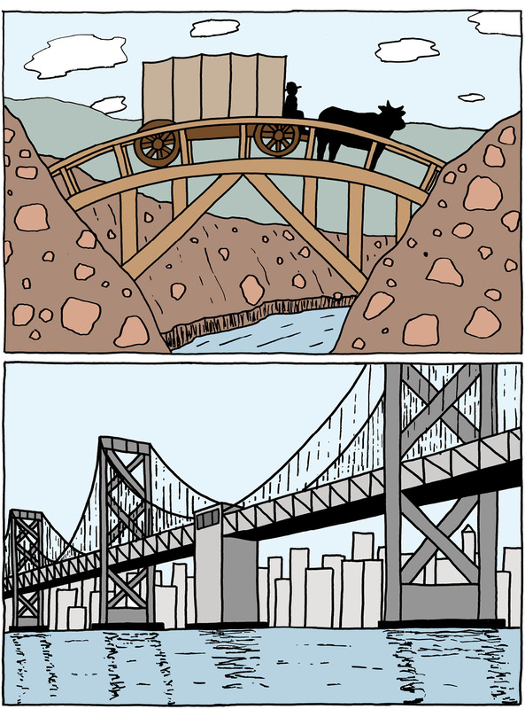
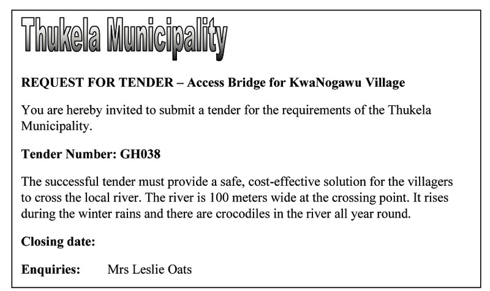
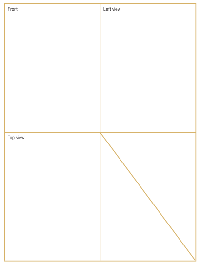

Mini-pat 1 a bridge to help the community
Over the next six weeks, you will design and build a model of a bridge. To do this, you will work through the different stages of the design process and arrange yourselves into teams.


Week 1
Investigate granny margaret thabang's problem (60 minutes)
-
In your team, read through the following story.

Figure 3 Rivers provide much-needed water for communities, but sometimes they can also make life difficult for people. For example, during the rainy season, people from villages on one side of a river struggle to get to the other side of the river,if there is no bridge.
Many of the people in the KwaNogawu village next to the uThukela River in KwaZulu-Natal work on the other side of the river. The doctors, banks and shops that they need to visit are also on the other side.
School children cross this river to get to their schools, and the elderly have to walk through it once a month to collect their government grants from the offices on the other side.
Usually, the villagers cross the river on foot, because the nearest bridge is very far away. But during the rainy season, when the river is in flood, it becomes very dangerous. The water levels are so high that it is difficult to get through it safely, and the villagers have also seen crocodiles in the river. Everyone is scared of drowning or getting attacked by the crocodiles, but they don't have a choice and have to go through the river to get to the other side.
-
Write a few sentences to explain the problem the villagers have.
-
Can you suggest a few ways to help Granny Margaret Thabang cross the river?
Figure 4: The tender request placed in a local newspaper.
A tender is a bid for work from a company. It gives details of how much the company would charge to complete a project.
The Thukela Municipality placed a tender request in the newspaper asking contractors to submit tenders for a structure to help people safely cross the river at KwaNogawu village.
Municipalities are not allowed to choose a contractor without giving as many contractors as possible a chance to apply. This is to stop anyone from being favoured over others, and to prevent corruption. Each contractor writes a tender document, which is a description of their plan for the project and shows how much they will charge to complete the work. The job is given to the contractor who presents the best plan at the lowest price.
You are going to build a structure to help the community. Read the story again and then investigate the different bridges below to decide which structure will be the best solution for the problem.
Investigate structures to solve the problem (60 minutes)
On this page and the next there are drawings of different types of bridges. You learnt about these bridges in Grade 8. Do you remember what the names mean? If you cannot remember, look at your Grade 8 book or ask your teacher to help you.
A: A beam and column bridge
B: An arch bridge

C: A truss bridge

D: A suspension bridge
E: A cantilever bridge
F: A cable-stay bridge of the harp shape

G: A cable-stay bridge of the fan shape
H: A small suspension bridge
Figure 5
Different types of bridges use different materials and construction methods, but they all have a similar function.
In your group, discuss some of the advantages and disadvantages of each of the bridges for the community. Think about which parts will help the community, and which parts will not help.
If the bridge is meant to carry cars, it might be too expensive for your tender. Remember that the bridge has to solve the community's problem. In technology, we call this fit-for-purpose. In this case, it means that your bridge has to be strong and high enough to carry people and not cars. However, your bridge has to be strong enough to withstand floods, which are common in KwaZulu-Natal. Your bridge must also be stable, so that it does not sway and cause old people and children to fall when they walk across. It should have a structure that can span a wide river.
Use the following list to help you to investigate each of the bridges in Figure 5on the previous page. Also bring pictures of bridges to school. You can find photographs of bridges in old newspapers and magazines.
|
Checklist for investigating bridges |
Yes |
No |
|
Is the bridge for cars? |
||
|
Is the bridge for people? |
||
|
Is the bridge too expensive for the tender? |
||
|
Can the bridge be built strong and high enough so that it is not washed away by floods? |
||
|
Can the bridge be built so that it is stable and does not sway? |
||
|
Can the bridge be built long enough so that it can reach or span across the river? |
||
|
Is the bridge strong enough so that the villagers can walk safely across? |

Week 2
Develop rough sketches of ideas (30 minutes)
Draw a rough sketch of your ideas for a bridge to help the community. Use the sketching techniques that you learnt in Grades 7 and 8.
Total [10]
Sketch your ideas here:
Evaluate and adapt your rough sketches (30 minutes)
Your team will now prepare a tender. To start, choose the best design in your team. This means you need to choose one sketch from all the rough sketches. To help you choose, answer the following questions:
|
Questions |
Yes |
No |
|
Does the structure allow people to move across the river safely? |
||
|
Does the structure protect people from crocodiles? |
||
|
Does the structure allow a group to cross safely? |
||
|
Will the structure be safe when the river floods? |
||
|
Is the structure durable, and will it last a long time without breaking? |
||
|
Is the structure made of the right materials? Remember that the bridge could be in constant contact with water and should not rust. |
||
|
Will the structure withstand both static and dynamic forces? |
||
|
Will the structure be very expensive to build? Remember that you are building it for people, not cars. |
||
|
Will the structure be expensive to maintain? |
||
|
Does the structure damage the environment? |
If the sketches do not meet these requirements, adapt them until they do.
Draw your adapted sketches in the space on the next page. This is your final solution and it will form the basis of your working drawing.
Make your sketches here:
Design brief with specifications andconstraints (30 minutes)
Write a design brief that explains what you want the structure to do. Your design brief has to list the specifications and constraints for your design. Use the open space below to write your design brief.
Remember that specifications are things that your design must have and constraints are things that your design cannot have. The specifications and the constraints are usually listed in the tender notice.
Specifications could include the following:
- The bridge has to be completed within a certain time.
- The bridge has to be built according to budget, including all labour costs.
- The bridge has to help the community. For example, you can employ local people to work on the bridge and train them while they work on the project. That way, they will have good skills that will help them to find work when this project ends.
- The bridge has to be user-friendly for disabled and older people.
Constraints could include the following:
- Time and cost constraints. For example, the building process should not take longer than a specific amount of time, and should not cost more than a certain amount.
- The bridge cannot exclude wheelchair users.
- The bridge cannot employ more than a certain number of people from another area.
- Women should not be prohibited from working on the project.
Total [10]
Write your design brief in the space below and on the next page:
Draw a flow chart (30 minutes)
Do you remember what a flow chart is? A flow chart is a summary of all the steps you have to follow to plan or make something. It is a visual way to show the steps in a planning or making process.
"Visual" means something that you can see.
A flow chart is a summary, so use short sentences or just keywords to write down your steps. Then draw a box around each step and an arrow between the steps.
A keyword is a word that can replace a whole sentence. Example: for "Make a list of tasks', just write list'
Look at the example of a flow chart below. Now draw a flow chart of how you will build your bridge. Do this on the next page.
Think of the very first thing you will have to do, and start from there. For example: will you measure the river first; will you buy the materials first; will you train your staff first; or will you draw up your budget first?
You can change your flow chart later when you make the model of your bridge. Engineers and technologists often change their plans while they work on a project.
Week 3
Make working drawings (60 minutes)
Working drawings are guides that show us how to build a specific structure. Make a working drawing of your bridge. It should be drawn to scale and show as much detail as possible.
Each member of your team should make their own first-angle orthographic projection of the bridge, showing the front view, top view and end view.
Each of your drawings should show the measurements of the structure and the scale you have chosen. Use correct line types.
Have another look at Chapter 1 to remind you how to make orthographic drawings.
You will need the following equipment:
- 30 °, 60 ° and 90 ° set square,
- a sharp pencil, and
- masking tape to attach your drawing sheet to your drawing board.

Work out a budget (60 minutes)
All projects that cost money need a budget. A budget is a plan that looks at the various costs and how the money will be spent.
When you build the bridge, think about the things that will cost money.For example:
- materials,
- labour,
- designers and engineers,
- equipment that you hire or buy, and
- transport.
Remember that you are a contracting company and want to make a profit. Once you have worked out the other costs, add on an amount for your profit.
There will be other companies who will tender for the job, so keep your costs low to make your tender attractive. However, do not compromise the safety of the bridge or allow it to become unfit for its purpose. Balance the need to make a profit with the need to build a safe bridge.
On the following page, there is an example of a cost table for another bridge. You can use some of the material costs shown in this table when making your own cost table for your bridge design.
Example:
|
Item description |
Quantity |
Price per unit (Rands) |
Total (Rands) |
|
Materials |
|||
|
Cement (80 kg bags) |
50 |
90 |
10 000 |
|
Pine Planks (200 cm \times 30 cm \times 2 cm) |
200 |
||
|
Bags of nails (10 \times 3 cm) |
10 |
||
|
Bricks |
5 000 |
||
|
Steel I-beam (5 m \times 6 cm) |
20 |
1 000 |
20 000 |
|
Subtotal |
|||
|
Labour |
|||
|
Unskilled labourers |
25 |
25 per hour |
|
|
Carpenter |
2 |
320 per day |
|
|
Foreman |
1 |
600 per day |
|
|
Welders |
3 |
720 per day |
|
|
Subtotal |
|||
|
Machinery/Equipment |
|||
|
Bulldozer and operator |
1 |
2 000 per day |
|
|
Road grader and operator |
1 |
2 500 per day |
|
|
Shovels and other equipment |
25 |
10 per day |
|
|
Subtotal |
|||
|
Other staff costs |
|||
|
Engineer |
|||
|
Architect |
|||
|
Work manager |
|||
|
TOTAL |
Your own list will be different, because it will depend on the materials you have chosen to use to build your bridge. If you are not completely certain of amounts or lengths, always add on a little extra to your final figure. It is better to have a little left over than to run short.
To help you to work out your costs, speak to a hardware shop owner, a building contractor, or a family member who is knowledgeable in these things. You can also look in the Yellow Pages for suppliers. They will give you information if you tell them about your project. Don't just make up the costs. You need your budget to be accurate.
Apart from the items on the above list you also have to account for VAT and insurance.
Total [10]
Profit margin
What additional amount are you going to charge?
Remember that you need to make a profit. This amount has to be fair to you and to the authorities who will award the contract.
Total all the subtotals and then decide on a percentage for the profit. You will then have the final total, which you will submit as the cost of building your bridge.
Week 4
Discuss and practise making your model (60 minutes)
You will make a model of your structure. Discuss how you will do this in your group.
Think carefully about all the materials you will need to build your model. Do you need paper, glue, and/or corrugated cardboard? And what about tools? Do you need scissors or glue-guns?
Write a complete list of all the materials and tools necessary to build your model.
You need a plan to help you stay organised. Ask yourselves questions such as:
- What should we do first?
- What materials do we need for each step?
When you have decided what you will do, add it to your flow chart. Each member of your team should draw up his/her own copy of the flow chart.
The following activity will help you to make strong structures out of paper. You can use these structures to help you build your model bridge.
Make a model of your bridge (60 minutes)
Build one model for your team that looks like your working drawing. It should be built neatly, safely and to scale. You can use materials available to you such as cardboard, string, wire, pieces of wood, drinking straws, plastic and clay. You can also use glue and paint.
Be aware of safety at all times, especially when working with blades and toxic glues (Wood glue, Prestik and Pritt are fortunately not toxic.).
Remember to follow the steps as shown in your flow chart. Everyone must be involved with making the model.
Total [20]
Week 5
Design an evaluation instrument (6 0 minutes)
In your team, make an assessment checklist (rubric) to see if your structure is a good solution to the community's problem. Use the specifications and your design brief from Week 1 to help you make the checklist.
Here is an example of a few items that could be in a checklist for a project:
- Is the structure stable? YES/NO
- Is the structure rigid? YES/NO
- Is the structure durable? YES/NO
- Does the structure allow for more than one person to crossit at a time? YES/NO
Evaluate your team's solution (60 minutes)
Meet with all the other teams in the class. Share your checklists among the groups and work together to choose the best criteria. This way, you will all be able to use the best criteria to make a single checklist that everyone can use.
Use the chosen checklist to assess your group's solution to the community's problem. Include this checklist in your tender documents.
Week 6
Present your tender to the class (120 minutes)
It is time to present your tender to the class. You have to give a 5-minute presentation to try to convince the tender board that your tender is the best one. Each member of your group needs to present a part of the tender to the class.
Total [10]
The tender should include the following information:
- sketches and orthographic plans
- a budget
- your model
- artistic impressions of your final plan, and
- an assessment checklist.
Plan which member of the team will present which part of the tender. Someone needs to draw the artistic impression of your structure. This drawing should have colour and detail to impress the tender board.